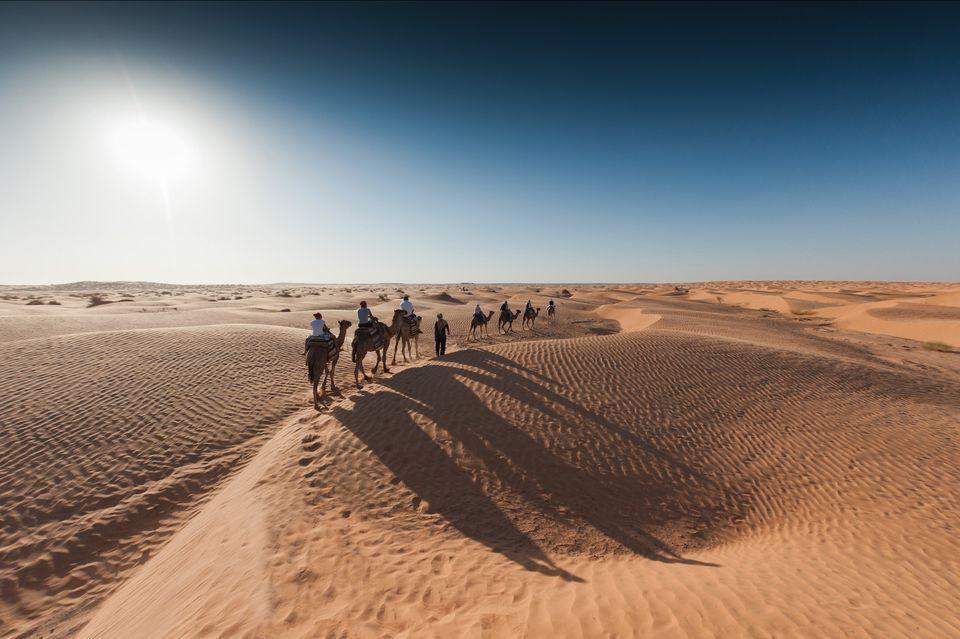
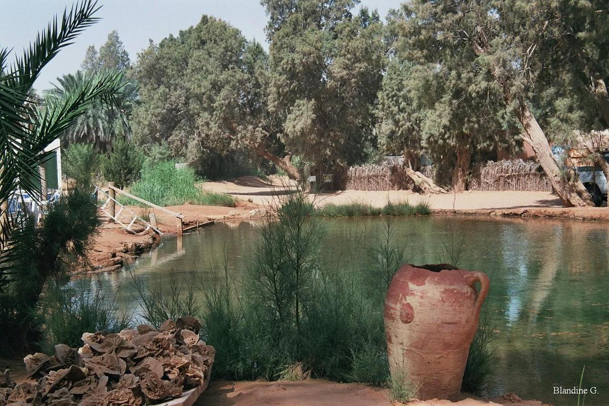
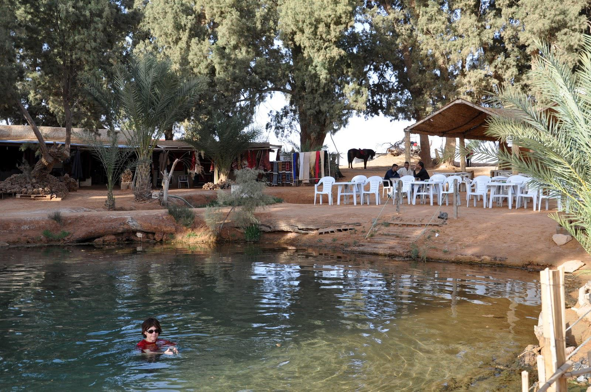

Ksar Ghilane

Ksar Ghilane is a small oasis in southern Tunisia located on the edge of the Grand Erg Oriental. This is the Sahara of your dreams where extraordinarily fine, orange sand dunes stretch on for miles and miles. Ksar Ghilane is the perfect spot to explore the dunes on a camel for a few hours or two weeks. There are several accommodation options, all in Bedouin style tents. There's even a hot spring to wash away the desert sand at the end of the day.

As soon as you arrive at Ksar Ghilane you'll be greeted by mysterious turbaned men on horseback encouraging you to rent their fine horses for a few hours of dune exploration. Camels are also on offer of course and are generally cheaper to rent (see below). Most people arrive with a 4x4 vehicle and there are some tracks in the dunes that you can drive on and practice a little rallying. You can also rent dune buggies (ATV's) for some fun, previous experience is recommended.Soak in the hot springs at the Campement Paradis, shop for a blue Touareg turban, or enjoy a cool beer at one of the camp cafes.

If you rent a horse for a few hours to enjoy the sunset, you'll pay a little more than if you rent a camel (25 Dinar vs 15 Dinar), but you're free to move around independently while you're on its back. If you want to run barefoot in the dunes then you'll have to tow your horse along with you. If you rent a camel, it's likely to be tethered to others but you're freer to move around once you dismount. The guys renting horses canter round and look very impressive with their turbans wound around their faces. It's hard to look cool when you're riding a camel and especially difficult when you're dismounting one.

Where to Stay in Ksar Ghilane Ksar Ghilane has quite a few accommodation options. Two camps I saw offer basic bedouin tent accommodation along with dinner and breakfast for around 20-30 Dinar. The tents have four beds and some blankets; toilets and showers are in a separate block. The camps have electric generators which switch off abruptly at 11 pm.
Camp Paradis is perfectly located with hot springs and dunes but it is normally crowded.
Campement el Bibane is quieter and cleaner but a short drive from the dunes.
The one upmarket option is the Pansea Ksar Ghilane, which offers more luxurious tent accommodation.